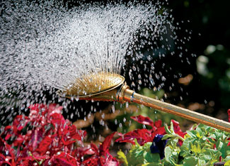

There’s just nothing like a high quality tool to make whatever task you’re doing more pleasant. And it is soo annoying when you pay good money for what turns out to be junk. I now have at least five watering wands that have failed in one manner or another in the last two years.
I was complaining to Wally Wilson of Lee Valley Tools about the crappy quality of these $30 items, when he said “The Haws Co. just came out with a new wand.”
As you may know, Haws has a reputation for making wonderfully functional watering cans, so when Wally offered to send a sample of the new Haws wand, I said sure!
As I expected, this is a splendid tool: Rust-proof solid brass, made in England. Clever on-off ring. Great balance. It’s clearly an exceptional tool that will probably last a lifetime. And with the brass “rose” that creates a fine, soft spray, this will be the only tool you’ll want to use to water newly sown seed beds. In my opinion, it’s easily worth the $67 price tag. It would make a terrific gift for any gardener. To order, visit the Lee Valley Tools Web site or call 800-871-8158.
|
 LEE VALLEY TOOLS This garden watering wand from Haws Co. is made with long-lasting, quality materials. |
|
|